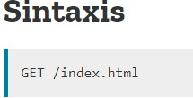
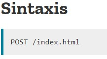
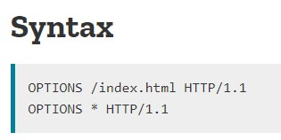
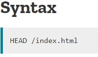
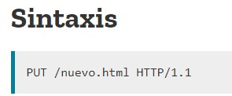
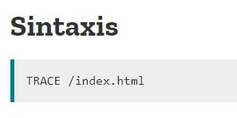

El método HTTP GET solicita una representación del recurso especificado. Las solicitudes que usan GET solo deben recuperar datos.
Se invoca cuando se introduce una URL en el navegador, cuando se pincha sobre un hiperenlace o cuando se envía un formulario GET. Permite enviar parámetros al servidor en la URI (o URL) (conocidos como Query String).

El método HTTP POST envía datos al servidor. El tipo del cuerpo de la solicitud es indicada por la cabecera Content-Type. La diferencia entre PUT y POST es que PUT es idempotente: llamarlo una o varias veces sucesivamente tiene el mismo efecto (no tiene efecto secundario // colateral), mientras que varios POST idénticos pueden tener efectos adicionales, como pasar una orden muchas veces. Una solicitud POST es tipicamente enviada por un formulario HTML y resulta en un cambio en el servidor.
Cuando la solicitud POST es enviada por otro método distinto a un formulario HTML el cuerpo puede aceptar cualquier tipo. Como se describe en la especificación HTTP 1.1.
El método POST está diseñado para permitir un método uniforme que cubra las siguientes funciones:
- Modificación de recursos existentes.
- Publicar un mensaje en un tablón de anuncios, grupo de noticias, lista de correos, o grupos similares de artículos.
- Agragar un nuevo usuario a través de un modal de suscripciones.
- Proveer un conjunto de datos, como resultado del envío de un formulario, a un proceso data-handling.
- Extender una base de datos a través de una operación de concatenación.

El método HTTP OPTIONS solicita opciones de comunicación permitidas para una URL o servidor determinados. Un cliente puede especificar una URL con este método, o un asterisco (*) para referirse a todo el servidor.
Funciona para solicitar al servidor información sobre las opciones de comunicación disponibles de un recurso determinado.

El método HTTP HEAD solicita los encabezados que se devolverían si la URL de la solicitud HEAD se solicitara con el método HTTP GET.
Similar a GET pero el servidor devuelve cabeceras. Usado para implementar caches de navegadores, informar al usuario del tamaño del recurso antes de intentar recuperarlo, etc.

La petición HTTP PUT crea un nuevo elemento o reemplaza una representación del elemento de destino con los datos de la petición.
La diferencia entre el método PUT y el método POST es que PUT es un método idempotente: llamarlo una o más veces de forma sucesiva tiene el mismo efecto (sin efectos secundarios), mientras que una sucesión de peticiones POST idénticas pueden tener efectos adicionales, como envíar una orden varias veces

El método HTTP TRACE efectua una prueba de bucle de mensaje por el camino al recurso objetivo proporcionando un útil mecanismo de debugging. Sirve para trazar la ruta de una etición a través de proxies y cortafuegos.
Usado para depurar errores en redes complejas.
